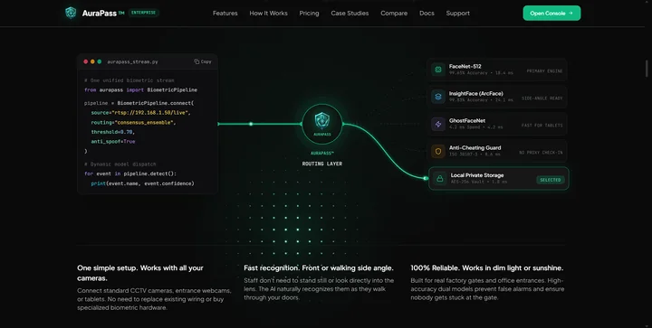

A closer look at the products, systems, and experiments I’ve worked on—from the problem each one starts with to the engineering choices underneath.
01 / FULL-STACK PRODUCT
From upload to the next watch.
Vixora explores the full journey around video: publishing, organizing, discovering, and returning to content. Its interface is shaped around the viewer’s next action; the service layer handles the workflows behind playback and creator tools.
PRODUCT SYSTEM
Node.js and PostgreSQL power the API and data model, with Redis for caching and rate limiting, BullMQ for background processing, and Socket.IO for real-time updates.
During my internship at ChemiCrown Trading Co., I worked on a B2B commerce and distribution platform for industrial chemicals. It brings catalog, inventory compliance, sales orders, payments, and employee administration into one operational surface.
FROM CUSTOMER NEED TO SYSTEM
The platform connected storefront and internal workflows through a React/Vite interface, Node.js services, and a PostgreSQL data model built with Prisma and Supabase.
React / ViteNode.jsPostgreSQLPrismaSupabase

AURAPASS · UNIFIED BIOMETRIC FLOW
03 / COMPUTER VISION SYSTEMS
Identity at the edge. Decisions with a trail.
AuraPass combines facial attendance and access operations in an on-premise system. The work focuses on fast local verification, liveness checks, and making each decision traceable for administrators.
THE ENGINEERING THREAD
High-concurrency Flask and Gevent APIs coordinate with Celery workers, PostgreSQL, and Redis. A React kiosk and multi-tenant role system support the day-to-day experience; tamper-evident logs give administrators a record of events.
A team project for HackNUthon 6.0’s Reve digital farming track. The pipeline turns soil spectrometer readings into useful indicators for nutrient, moisture, and pH prediction.
EXPERIMENT, COMPARE, REFINE
We processed the readings, engineered wavelength features, and compared approaches including Random Forest, CatBoost, LightGBM, and TensorFlow. The model comparison reached an R² score of 0.89, and the team was a finalist.
Elevara is a career product concept exploring how resume feedback, job-specific tailoring, cover letters, interview practice, and learning plans could work together.
A SINGLE PREPARATION LOOP
The product direction brings repeated job-search tasks into one place, linking application context with interview preparation and the skills a candidate wants to strengthen.